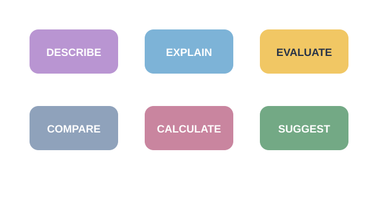
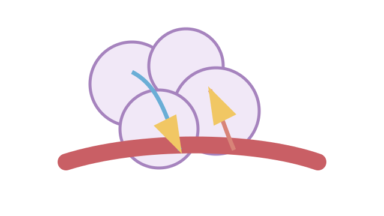

LAUNCH Science · W7L2 · lesson resources
Run a command-word clinic
Choose one shared task or resource within the current lesson stage. Keep the lesson’s 40-minute timetable and 15-minute independent work.
We Do · Run a command-word clinic
Sample graph: sucrose 0.2 → 0.6 mol dm⁻³; mass change +12% → −8%. Improve each answer.
- Describe: “The graph changes.”
- Explain: “The alveolar wall is thin.”
- Evaluate: “We should repeat it.”
Discuss, point, write or dictate your first reason. Use one example first; extend only if there is time.
Reveal shared reasoning after an attempt
Describe a numerical pattern.
Explain: thin walls → short diffusion distance → faster exchange.
Evaluate: repeat each concentration to measure spread and calculate a mean; also standardise blotting. Repeats alone do not fix a systematic error.
This page keeps your writing while it stays open. It does not save or send it.
Model explanation and diagram

The command word tells you the kind of answer. Marks depend on the question and its mark scheme, not magic words such as “whereas”.
Watch for: “Evaluate” is more than listing improvements: weigh relevant evidence or method strengths/limits and make a supported judgement where asked.
Give a smaller support cue
Describe = say what happens. Explain = say why. Compare = link a similarity or difference. Calculate = show working. Evaluate = judge using evidence.
Optional video · Gas exchange in the lungs
Watch for: How does a thin wall help oxygen move into the blood?
Use a short relevant extract within I Do, then pause for an explanation. The clip replaces part of the modelling time.
Open the freesciencelessons video in a new tab
No-video version · use the same question

A thin wall gives a short diffusion distance. Oxygen moves down its concentration gradient from alveolar air into the arriving blood.
Internet is needed for the optional clip. It is concept teaching; viewing it is not completion of a practical.